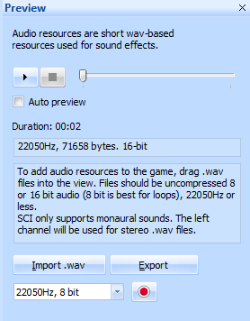

Important
This section applies to SCI1 and up only
Digital Audio¶
The Audio tab in the Game Explorer shows the current audio resources in the game. Unlike the editor for most other resources, SCICompanion doesn’t have a document-centric Audio Editor. All the functionality is handled in the Preview pane.
Relation to Sound resources¶
Audio and Sound resources share the same “namespace”. That is to say that from script there is no way to distinguish between Sound resource #146 and Audio resource #146. Both are controlled by the Sound object in script.
If you look at the sound and audio resources in Sierra’s games, you’ll see the Audio resources are often digital audio versions of the Sound resource of the same number. This allowed Sierra to support low-spec sound cards that could only play MIDI, and still have digital sound effects for cards that could support it.
In your game’s resource.cfg file, the following line will ensure that digital audio resources will be prefered over MIDI sound resources:
prefer_digitalsfx = true
Sound file management in SCICompanion¶
Please read the section on the audio file cache.
Importing¶
You can import .wav files via the Preview pane. SCICompanion supports importing 8-bit or 16-bit audio files. The highest bitrate supported by SCI is 22050Hz. Anything higher than that will be automatically downsampled before it is added to the game.
SCI does not support stereo digital audio, so when a .wav with two channels is imported, the left channel will be used.
After you have chosen the .wav file to import, you will asked to enter a resource number (and optional name) for it.
Exporting¶
You can export the currently selected audio resource to a .wav file.
Recording¶
You can record from your computer’s microphone right in SCICompanion. This functionality is mainly intended for message audio, but it is also present in the preview pane for regular audio resources.
Tip
You can just drag a .wav file into the Game Explorer to import it into the game.